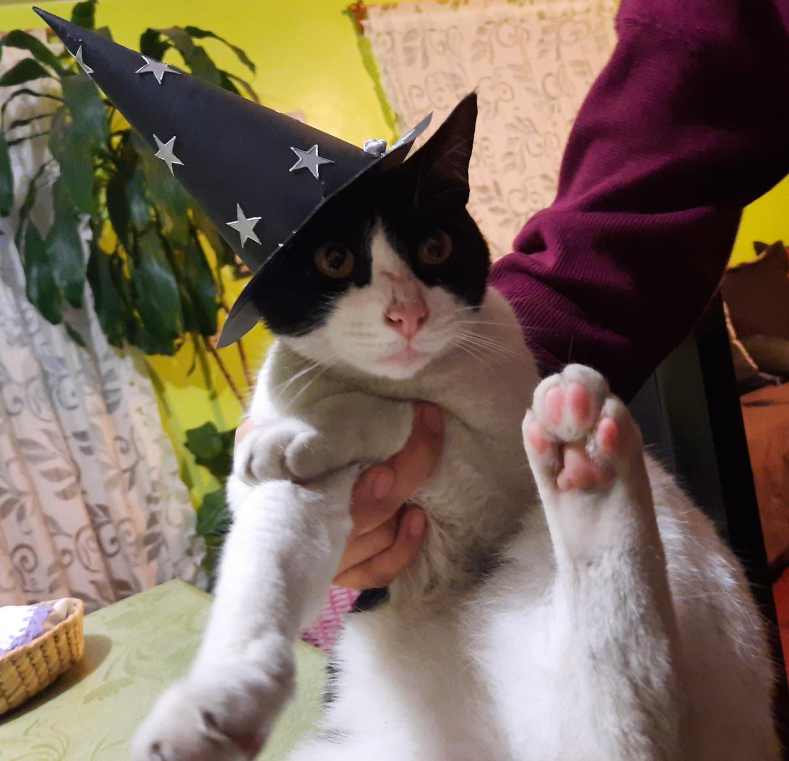
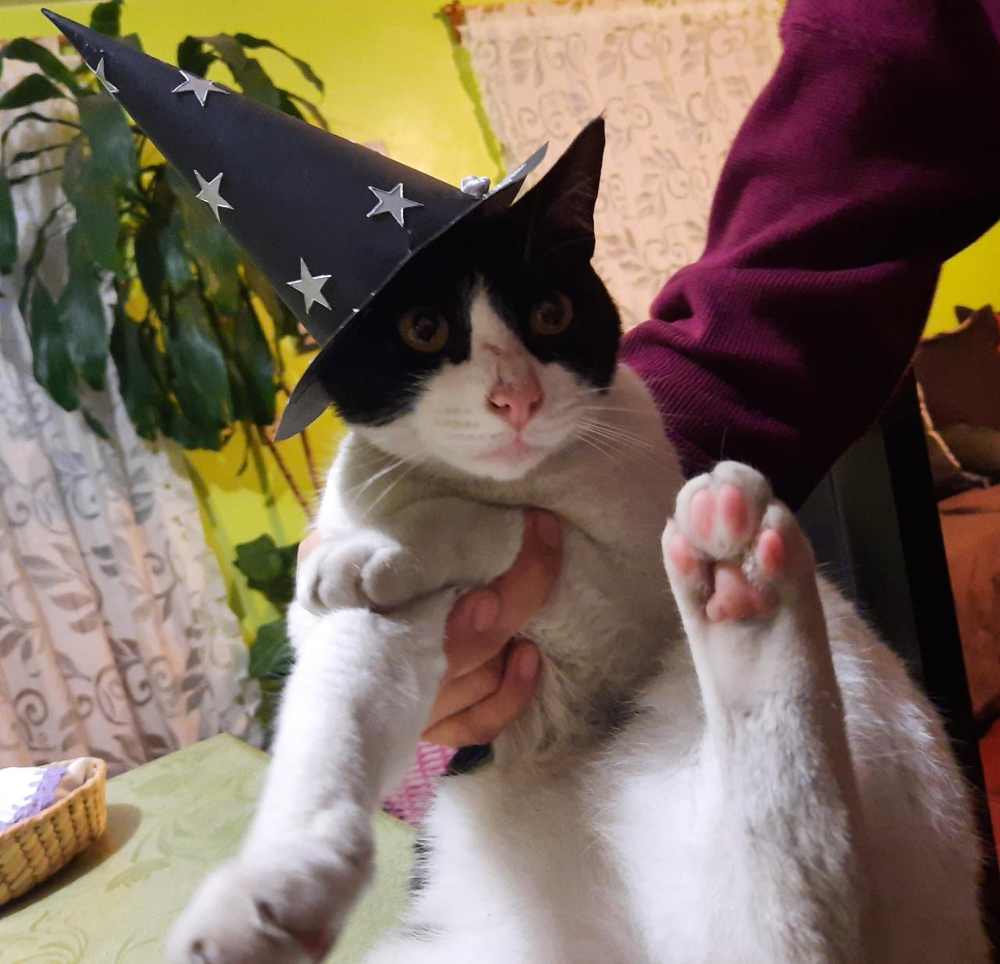

| Me gusta pasar mis ratos libres en el gym | |
|---|---|
| Me gusta correr por las tardes | |
| Me gusta escuchar musica | |
| Me gusta ver peliculas | |
| Me gusta bañar a mi gata |  |
Sehas Jonathan Flores Salgado
"El exito llega para todos aquellos que estan ocupados buscandolo"
Henry Thoreau
| Me gusta pasar mis ratos libres en el gym | |
|---|---|
| Me gusta correr por las tardes | |
| Me gusta escuchar musica | |
| Me gusta ver peliculas | |
| Me gusta bañar a mi gata |  |